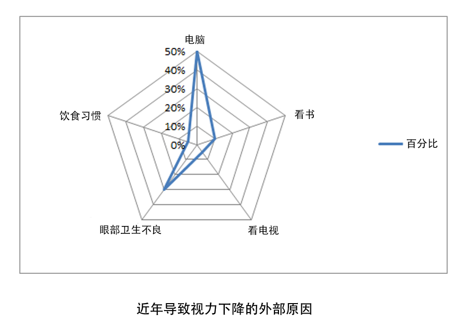
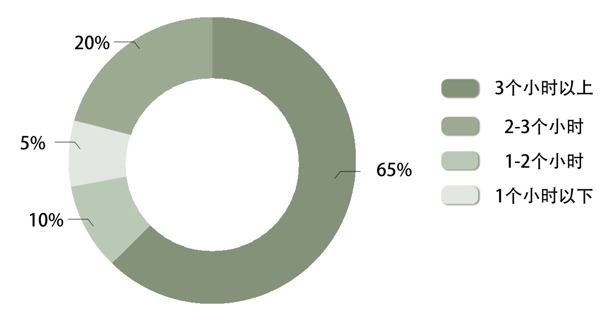
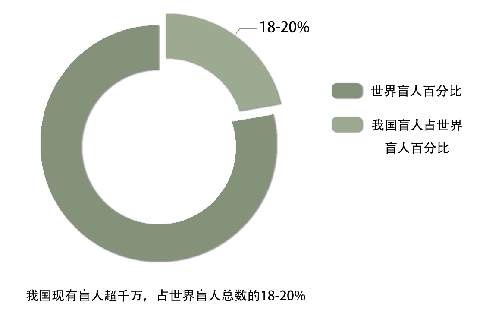
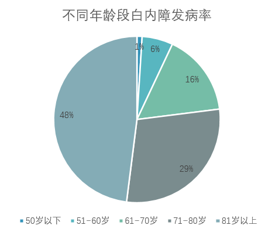
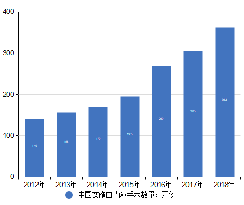
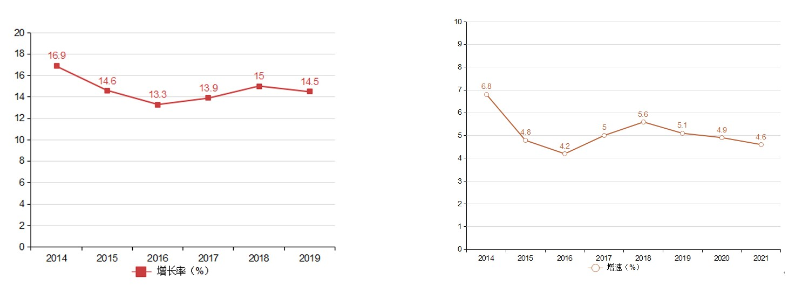

珍eye明天——关爱眼健康
2020年6月6日是第25个全国“爱眼日”，今年的主题是“视觉2020，关注普遍的眼健康”。宣传重点及口号有6个，分别为“合理用眼，关注孩子眼健康”“科学防控近视，拥有光明未来”“眼底一张照，眼病早知道”“关爱白内障患者，共享清晰视界”“控血糖、查眼底，预防糖尿病致盲”“重视低视力康复，提高视觉质量”。
据调查数据显示，目前在我国眼病患者中，近视和干眼症患者人数最多，共有约9.2亿人(截至2018年)，占人口总数的65.95%。
在各类眼科疾病中，最常见的是近视，危险性最高的是白内障。目前全球近视的患病人数已超过10亿。在中国约有30%的人口（超过三亿人）患有近视，且今年来近视患病率在中国年轻人群体中呈急剧增长趋势，在16至22岁的群体中已达80%左右。
除了遗传因素和发育因素外，后天环境因素是导致青少年视力下降的罪魁祸首。电子产品的使用、学习用眼不当、眼部卫生不良、饮食习惯是引起视力下降的主要外部因素。
由于网络的普及，大多数学生在课余选择上网、打游戏、追剧，有65%的中小学生每天注视荧光屏的时间为3小时以上，仅有5%的学生每天注视荧光屏的时间为1小时以下。
白内障是一种常见的眼科疾病，也是全球第一致盲眼病，我国现有盲人超千万，占世界盲人总数的18-20%。在我国眼病致盲的原因中，占比最高的是白内障，其次是青光眼，老年黄斑变性、糖尿病引起的视网膜疾病等。
数据显示我国60至89岁人群白内障发病率约为80%，90岁以上人群白内障发病率高达90%以上。随着我国人口的老龄化和白内障的发病率的增加，我国白内障等眼病患者数量将呈现长期增长的趋势。
随着医疗设施的不断完善，2012-2018年我国实施白内障手术的案例逐年上涨。
国内眼科医疗器械市场规模大增长快，国外产品占比较高。预计2021年增长至375亿元，年复合增速达18.5%。受益于屈光不正患病率和白内障手术率的提高，角膜接触镜、人工晶体等细分市场高速增长，推动行业加快增长，且预计未来仍将保持高增长态势。下图为2014-2019年眼科医疗市场规模增长率趋势、2013-2021年眼科医疗诊疗人次同比增速预测。
